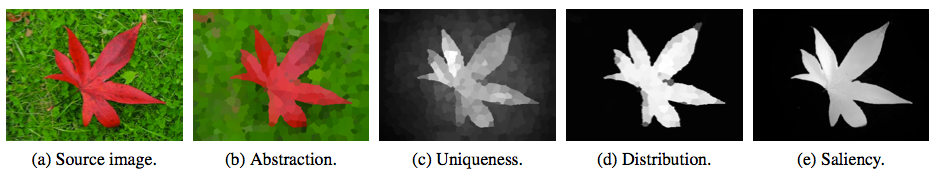
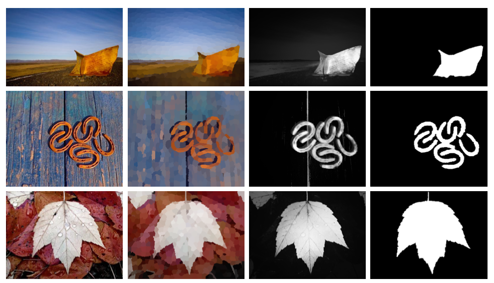

Saliency Filters: Contrast Based Filtering for Salient Region Detection
1Federico Perazzi 2Philipp Krähenbül 1Yael Pritch 1Alexander Hornung
1Disney Research Zurich 2Stanford University

Illustration of the main phases of our algorithm. The input image is first abstracted into perceptually homogeneous elements. Each element is represented by the mean color of the pixels belonging to it. We then define two contrast measures per element based on the uniqueness and spatial distribution of elements. Finally, a saliency value is assigned to each pixel.
Abstract
Saliency estimation has become a valuable tool in image processing. Yet, existing approaches exhibit considerable variation in methodology, and it is often difficult to attribute improvements in result quality to specific algorithm properties. In this paper we reconsider some of the design choices of previous methods and propose a conceptually clear and intuitive algorithm for contrast-based saliency estimation. Our algorithm consists of four basic steps. First, our method decomposes a given image into compact, perceptually homogeneous elements that abstract unnecessary detail. Based on this abstraction we compute two measures of contrast that rate the uniqueness and the spatial distribution of these elements. From the element contrast we then derive a saliency measure that produces a pixel-accurate saliency map which uniformly covers the objects of interest and consistently separates fore- and background. We show that the complete contrast and saliency estimation can be formulated in a unified way using high- dimensional Gaussian filters. This contributes to the conceptual simplicity of our method and lends itself to a highly efficient implementation with linear complexity. In a detailed experimental evaluation we analyze the contribution of each individual feature and show that our method outperforms all state-of-the-art approaches.

Left to right: input images, abstraction into homogeneous elements, our saliency computation, ground truth labeling.
Introduction
In this work we reconsider the set of fundamentally relevant contrast measures and their definition in terms of image content. Our method is based on the observation that an image can be decomposed into basic, structurally representative elements that abstract away unnecessary detail, and at the same time allow for a very clear and intuitive definition of contrast-based saliency. Our first main contribution therefore is a concept and algorithm to decompose an image into perceptually homogeneous elements and to derive a saliency estimate from two well-defined contrast measures based on the uniqueness and spatial distribution of those elements. Both, local as well as the global contrast are handled by these measures in a unified way. Central to the contrast and saliency computation is our second main contribution; we show that all involved operators can be formulated within a single high-dimensional Gaussian filtering framework. Thanks to this formulation, we achieve a highly efficient implementation with linear complexity. The same formulation also provides a clear link between the element-based contrast estimation and the actual assignment of saliency values to all image pixels. As we demonstrate in our experimental evaluation, each of our individual measures already performs close to or even better than existing approaches, and our combined method currently achieves the best ranking results on the public benchmark found here:.
Citation - BibTeX
Federico Perazzi, Philipp Krähenbül, Yael Pritch, Alexander Hornung. Saliency Filters: Contrast Based Filtering for Salient Region Detection. IEEE CVPR, Providence, Rhode Island, USA, June 16-21, 2012. [ Pdf 7.3MB ] [ Data ] [ Code ][ Poster ] [ BibTeX ]
Supplementary Material
The dataset of images, including sources, ground-truth segmentations as well as several others saliency maps from other state-of-the-art methods can be found in [2] and [7].
Correction
There was a slight error in the plot of the MAE measure in Figure 6c which, however, does not affect the overall result (Figure 6c_corrected). We thanks Chuan Yang for pointing this out.
{kind=link}
{kind=link}